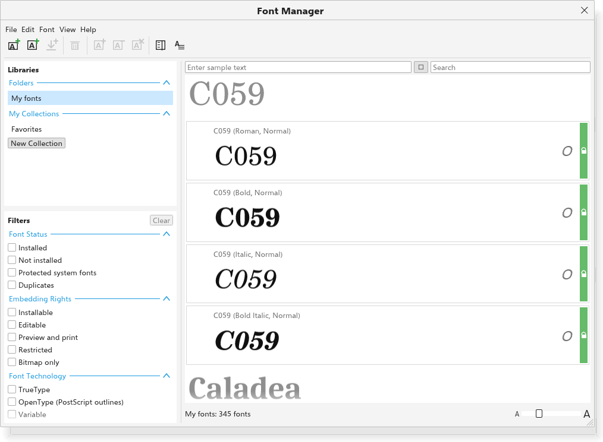

Fontes e glifos
O TraceDraw usa as fontes instaladas no seu computador, as fontes que você acrescenta no Gerenciador de fontes e as fontes que vêm com um desenho. Esta página explica os painéis e a caixa de diálogo para trabalhar com fontes e caracteres especiais.
O painel Fontes
O painel Fontes lista as famílias de fontes.

- Digite no campo de filtro para reduzir a lista.
- Em Fontes no documento ficam as famílias que o desenho usa. Uma família que não está instalada aparece marcada como ausente; o texto dela aparece em uma fonte parecida e mantém o nome da fonte. Uma família que veio com o desenho aparece marcada como incorporada.
- Clique em uma família para dá-la ao texto selecionado, ou para torná-la a fonte do novo texto.
Listas de fontes e o filtro
As listas de fontes da barra de propriedades, do painel Texto, do painel Glifos e das opções funcionam do mesmo jeito:
- Digite para pular para uma família. As cinco últimas famílias escolhidas ficam no topo ("usadas por último"), e o nome de cada família aparece na própria fonte.
- A roda do mouse sobre a lista fechada escolhe a família seguinte ou a anterior para o texto em edição ou selecionado.
- Uma fonte que veio com o desenho e não está instalada mostra "Incorporada" no fim da linha e depois do nome na caixa de fonte: o texto é desenhado com a cópia que veio com o desenho.
- O botão Filtro no topo da lista aberta mostra as opções do filtro ao lado da lista. Cada clique filtra na hora e deixa a lista aberta; o botão conta as escolhas feitas, como "Filtro (2)", e Limpar filtro no topo das opções as remove. As opções, em seções que se recolhem:
- Fontes mostradas: todas, as instaladas, as deste desenho ou, na versão para navegador, as fontes para baixar.
- Estilo: serifada, sem serifa, manuscrita, decorativa, monoespaçada, símbolos.
- Peso: leve, regular, negrito.
- Largura: condensada, normal, expandida.
- Tecnologia: TrueType, OpenType, variável.
- Escritas: latina, grega, cirílica, hebraica, árabe, devanágari, bengali, tailandesa, coreana, japonesa, chinesa e símbolos.
- Recursos OpenType: ligaduras, kerning, versaletes, os tipos de algarismos, frações, sobrescritos e subscritos, ordinais, zero cortado, floreios, alternativas e conjuntos estilísticos, cada um por si.
- Direitos de incorporação: instalável, editável, visualizar e imprimir, restrita, só bitmap.
- Pastas: as pastas onde estão as fontes instaladas.
Dentro de uma seção, uma família precisa de uma das opções marcadas (de todas as marcadas, nos recursos OpenType), e precisa atender a todas as seções. Os valores são lidos dos próprios arquivos de fonte; com milhares de fontes, a lista se completa em alguns instantes na primeira vez.
Fontes variáveis
Uma fonte variável guarda uma faixa de pesos, larguras e outros desenhos em um só arquivo. Para defini-los no texto:
- Selecione o texto, ou as letras, em uma fonte variável.
- Clique no botão ao lado do tamanho da fonte na barra de propriedades (ou na primeira seção do painel Texto). Ele fica cinza, com uma dica dizendo por quê, quando a fonte não é variável. A seção Caractere do painel Texto mostra os mesmos controles deslizantes.
- Arraste o controle de um eixo: Peso, Largura, Inclinação, Itálico, Tamanho óptico, ou os eixos próprios da fonte com os nomes que ela dá, cada um na faixa da fonte. O texto acompanha o controle enquanto você arrasta, para você avaliar na página.
Soltar o controle, ou digitar um valor, guarda o valor em um passo de desfazer. Eixos padrão remove os valores. Eles são salvos em arquivos .tdraw e desenhados em exportações e PDFs; um peso definido assim substitui o negrito que o TraceDraw desenharia.
Fontes ausentes
Quando um desenho usa fontes que não estão instaladas, a caixa de diálogo Missing Fonts pergunta qual fonte instalada desenha cada uma, para esta sessão ou de vez. Veja Fontes ausentes. Instale as fontes e o texto volta a aparecer nelas. Desenhos salvos como .tdraw, e arquivos .cdr com fontes incorporadas, podem levar as fontes junto.
O Amostrador de fontes
O painel Amostrador de fontes (Texto > Amostrador de fontes) mostra uma linha de texto de exemplo em várias fontes, uma abaixo da outra, para compará-las.

- Digite o texto de exemplo no alto; em branco, é usada uma frase no idioma da interface.
- Defina o tamanho (10 a 96, 28 de início).
- Acrescente fontes digitando parte de um nome e clicando em um dos resultados (até 24 fontes); o X remove uma. De início, o painel lista a fonte de texto e as fontes do desenho.
- Clique em uma amostra para dar essa fonte ao texto selecionado.
O painel Glifos
O painel Glifos (Texto > Glifos, Ctrl+F11) mostra todos os caracteres de uma fonte, para inserir símbolos e caracteres especiais.

- Escolha a fonte.
- Escolha um intervalo de caracteres: a fonte inteira, Latim básico, Suplemento Latin-1, Latim estendido, Grego, Cirílico, Hebraico, Árabe, pontuação, números, moedas, setas, operadores matemáticos ou símbolos.
- Clique em um caractere. Ele é inserido no cursor do texto que você está editando, ou como um novo texto no meio da página.
Passe o ponteiro sobre um caractere para ver o nome e o código. Uma pequena seta embaixo de um caractere indica que a fonte tem alternativas para ele (como floreios ou versaletes); clique nela para vê-las. Os glifos usados por último ficam no alto do painel.
Digite no campo de pesquisa acima da grade para encontrar caracteres: digite os próprios caracteres (como é) ou um código Unicode como U+20AC, 0x20ac ou 20AC. A linha acima da grade mostra o código, o caractere e o intervalo do caractere sob o ponteiro.
O Gerenciador de fontes
Ferramentas > Gerenciador de fontes abre o Gerenciador de fontes, uma janela que organiza suas fontes.

- Bibliotecas (no alto à esquerda): Minhas fontes (as fontes instaladas), as pastas que você acrescentou, Favoritas e suas coleções. Clique duas vezes em uma coleção para renomeá-la; clique com o botão direito para mais opções.
- Filtros (embaixo à esquerda): por situação (instaladas, não instaladas, fontes protegidas do sistema, duplicadas), direitos de incorporação, tecnologia (TrueType, OpenType, variável), peso, largura, estilo, intervalo de caracteres e recursos OpenType. Limpar remove os filtros.
- Lado direito: o texto de exemplo e as predefinições, um campo de busca (família, estilo ou nome PostScript) e as fontes como cartões, agrupadas por família. Cada cartão mostra uma amostra, a tecnologia e uma barra que fica verde quando a fonte está instalada. Clique para escolher uma fonte, Ctrl+clique para escolher várias.
Para usar o Gerenciador de fontes:
- Acrescentar pasta procura arquivos de fonte (TTF, OTF, TTC, OTC, até três níveis abaixo) em uma pasta. As fontes dela podem ser usadas nos desenhos na hora e a cada início enquanto a pasta estiver nas bibliotecas, sem instalar uma a uma; remover a pasta as tira de novo (fontes instaladas por conta própria ficam). Acrescentar fonte instala um arquivo de uma vez.
- Instalar torna as fontes escolhidas disponíveis no TraceDraw, agora e a cada início. Desinstalar as remove; as fontes do próprio sistema são protegidas.
- Acrescentar à coleção e Remover da coleção organizam as fontes; arraste fontes até Favoritas ou uma coleção para acrescentá-las.
- Clique duas vezes em uma fonte instalada, ou escolha Usar no desenho, para dá-la ao texto selecionado.
- Mostrar detalhes mostra a família, o estilo, a versão, o arquivo, a tecnologia, os direitos de incorporação, o peso, a largura, o número de glifos, as escritas e os recursos da fonte que você clicou.
As fontes que o desenho usa e que não estão instaladas aparecem em laranja acima dos cartões. Na versão para navegador, Acrescentar fonte carrega um arquivo de fonte só para a sessão.